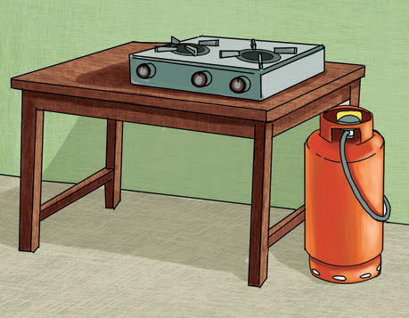
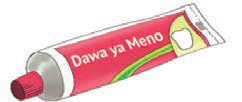
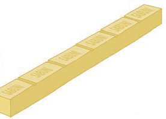
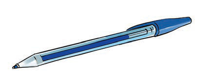
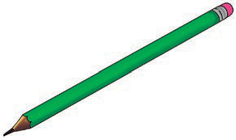

(a) Meza, jiko na mtungi wa gesi

(b) Dawa ya meno

(c) Sabuni ya mche
Kielelezo namba 7: Vitu vinavyotumika nyumbani
(ii) Kutengeneza vitu vinavyotumika shuleni kama vile chaki, daftari, kalamu na vitabu. Kielelezo namba 8 kinaonesha mifano ya vitu hivyo.

(a)

(b)
Kielelezo namba 8: Kalamu ya wino na penseli
(iii) Kutengeneza vifaa vya ujenzi kama vile saruji, chokaa, mabati, mabomba, chuma na marumaru vinavyotumika katika ujenzi wa nyumba. Kielelezo namba 9 kinaonesha baadhi ya vifaa vya ujenzi.